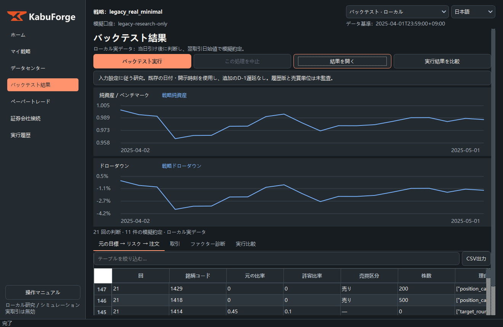
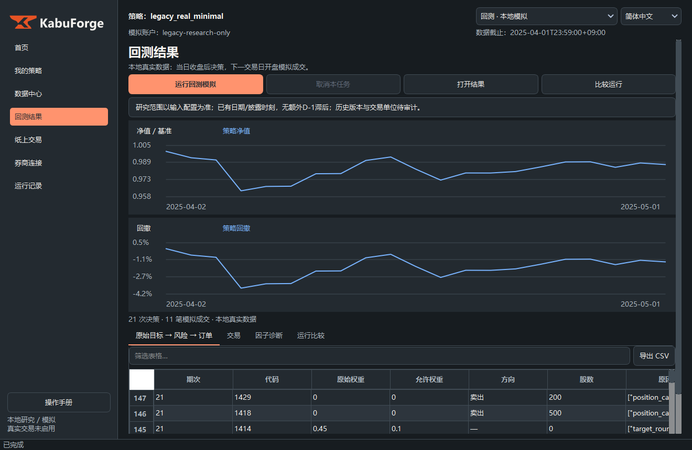

本地既有三语操作演示，按原图与原 GIF 发布。历史曲线仅说明界面操作，不代表当前公开因子发行版的回测结果。原始市场数据、私有因子源码、运行配置与账本均不随演示发布。
实际切换 GUI 语言后录制。中文、日文、英文均展示同一整月输入：2025-04-01至04-30决策，04-02至05-01执行，21个净值点、11笔模拟成交。日文与英文分别重跑，输入身份、净值和最终账户与中文版一致。
截图为运行中的应用客户区；GIF 为关键步骤摘要，等待时间已压缩，不包含桌面或鼠标。原始图像未通过替换文字制作。
| 语言 | 截图集 | 图表 | 动图 | 说明 |
|---|---|---|---|---|
| 中文 | 截图集 | 曲线原图 | 操作 GIF | 手册 |
| 日本語 | 截图集 | 曲线原图 | 操作 GIF | 手册 |
| English | 截图集 | 曲线原图 | 操作 GIF | 手册 |


